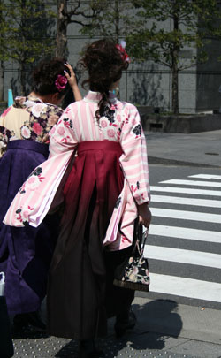

Tokyo CuisineMuch has been made lately of Tokyo being a gourmet city, boasting more Michelin stars than any other city in the world; more, in fact, than New York and Paris combined. According to the Japan National Tourist Organization, food is currently the number one reason for foreign leisure travel to Tokyo. From its discovery in the late 16th century by Tokugawa Ieyasu, the sleepy fishing town of Edo (as it was known then) quickly grew into the world’s most populous city, all in the space of 100 years. Since then, Tokyo has steadily attracted people from all over Japan, who brought their culinary traditions with them. Therefore, Tokyo cuisine reflects the whole of Japan, and increasingly, the world. Its culinary world is global: on any given day, breakfast can be Japanese, lunch, French and dinner, Brazilian. Although there are few indigenous Tokyo foods, sushi is one of them. The type of nigiri sushi using fresh raw fish that we know today was born along the beachside walks on Tokyo Bay. The first known types of sushi were from the Kansai region, where vinegared rice was used to keep salted or preserved fish fresh, and the first sushi in Tokyo was also partially cooked or preserved in vinegar. However, after the arrival of refrigeration, and with abundant fresh fish from the Pacific, the sushi we know and love today was born. The global popularity of sushi has lured devotees to the Tsukiji Wholesale Fish Market, and in the past few years, has caused so much disruption to business that visitors are now banned during the busy holiday period. Believe it or not, I have yet to go to Tsukiji, because like many Japanese, I don’t want to be a burden. However, I know that given my duties for this site, I must make my pilgrimage soon. Tokyo can be an overwhelming city that feels unfamiliar, even with repeated visits. With its twisting streets and constant new construction, it’s easy to get lost. Historic landmarks are often toppled to make way for the latest trends in architecture, and buildings from the 80s or 90s are often already out of fashion. Tokyo’s residents are famously finicky, and trends in fashion, food and culture come and go with amazing speed. A good, detailed map with pictures of buildings is essential, but to truly see Tokyo’s hidden gems, it’s best to seek a qualified guide, who can uncover the treasures of this deliriously fun, fast and fascinating city. I am listing some of my favorite restaurants in Tokyo, which barely skim the surface of the vast ocean (over 80,000 restaurants) of Tokyo’s varied culinary scene. You will notice that the list doesn’t include Michelin-star restaurants (yet) but this is due simply to budget. If you have a recommended restaurant, (Michelin-rated or not). we would love to hear about it on te Savory Japan Blog. |
|

Tokyo combines the best of old and new: Top: the sleek Kengo Kuma-designed Suntory Museum of Art at Tokyo Mid-town. Above: Graduation day. The old-fashioned hakama (overskirts) popular during the Meiji era are making a comeback. |